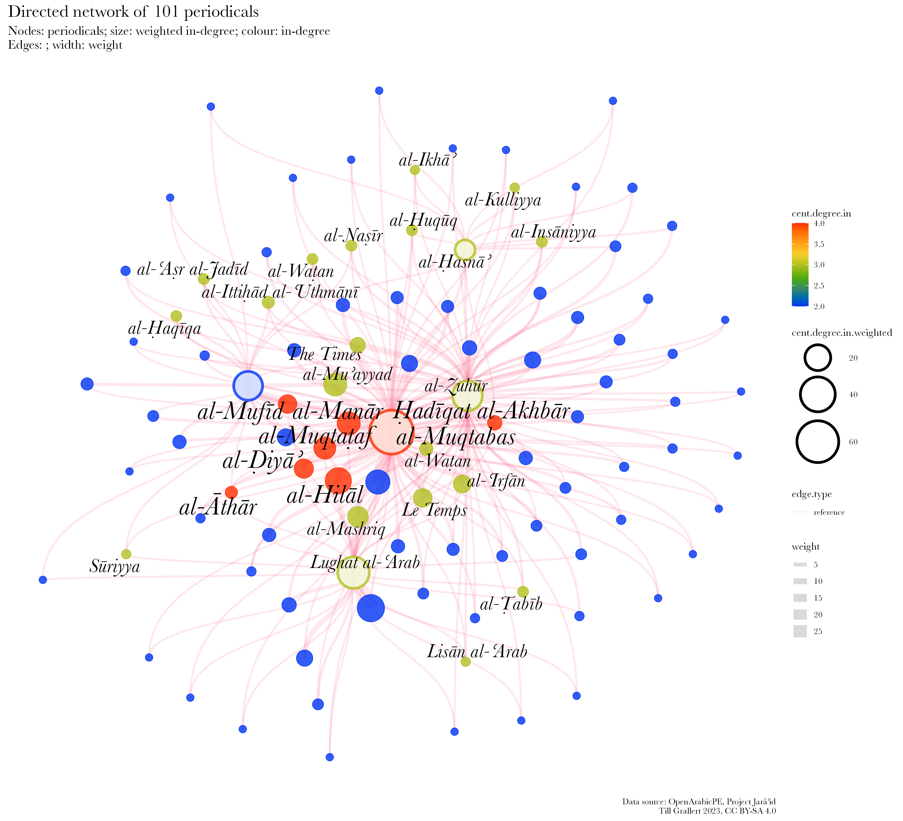
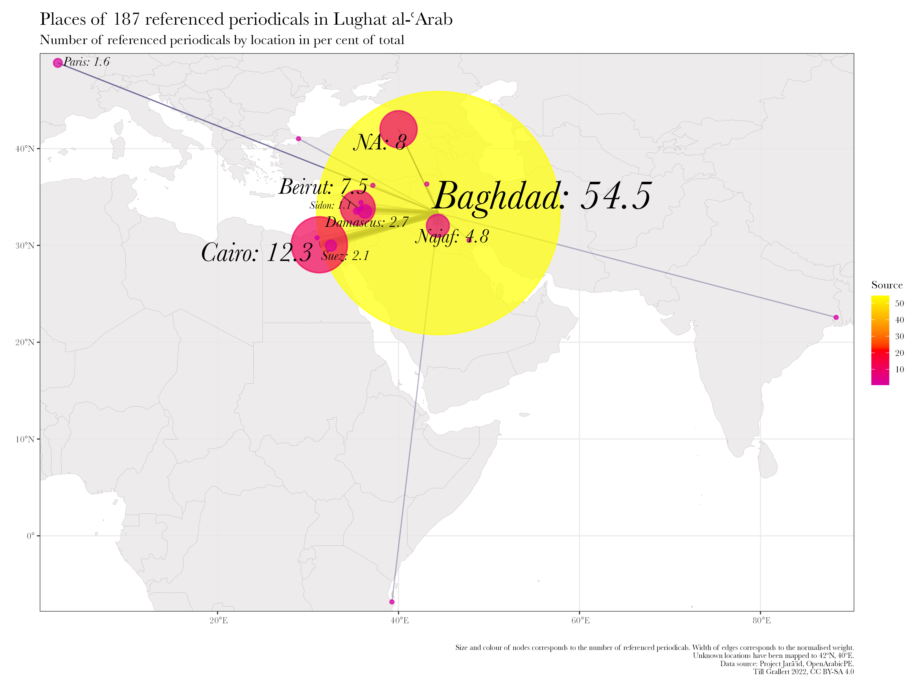

Der Netzwerkbegriff und arabische Zeitschriftenforschung
-> Historische Netzwerkanalyse als Zugang zu
einer systematischen Periodikaforschung
Plan
Figure 1: Netzwerk der in al-aqiq,
al-asn, Lughat al-Arab,
al-Muqtabas und al-Zuhr erwhnten
Periodika.
Netzwerkanalyse
Fallstudie: Rezeption anderer Periodika
Set-up
Ergebnisse
Schlubemerkungen
Netzwerkanalyse in der Periodikaforschung
Periodika als relationales Medium
Jede Ausgabe reprsentiert ein Netzwerk von
Texten und Menschen (und
Orten)
Jeder Titel reprsentiert ein Netzwerk von
Menschen (und Orten)
Periodika existieren im Plural beziehen sich
aufeinander
historische Periodika existieren in einem
Sammlungszusammenhang
Forschungsfragen
Was sind die wichtigsten Knoten (Autor_innen, Periodika,
Orte etc.) im diskursiven Feld der Presse?
Rezeptionsgeschichte:
Wer hat was, wo und wann gelesen (und darber
geschrieben)?
Produktionsgeschichte:
Wie wurden Periodika produziert?
Wer verfasste die mehrheitlich anonymen Texte?
Wie hoch ist die Wiederverwertungsrate und wie reisten
Texte?
Netzwerkanalyse Hintergrund
Netzwerkanalyse
Statistische Analyse der Beziehungen
(Kanten) zwischen Entitten
(Knoten)
Figure 2: Gerichtetes Netzwerk aller in al-Muqtabas
1(12), 1907 erwhnter Periodika. Gre und Farbe der Knoten:
weighted degree.
Modalitt
Unimodal: nur eine Art von Knoten, z.B. Periodika
Multimodal: verschiedene Arten von Knoten, z.B. Periodika
und Personen
Zentralitt von Knoten
Anzahl und Strke der Verbindungen
Lnge des Weges zu allen anderen Knoten
Verbindungen zwischen Clustern
Netzwerkanalyse
Cluster
Gruppen von Knoten, die untereinader mehr verbunden sind als
mit anderen Knoten
Dichte
Grad der Verbundenheit
Figure 3: Ungerichtetes Netzwerk aller in al-Muqtabas
1(12), 1907 erwhnter Periodika. Kanten und Farbe der
Knoten: Sprache. Gre der Knoten: weighted
degree.
Modellierter, digitaler Volltext mit
Auszeichnung von named entities (Periodikatitel)
Normdatenstze zur Disambiguierung und
Anreicherung
Vorhandene Daten?
Survival und collection biases fhren zu
digitisation bias
Periodika
1918
1929
published
2054
3550
known holdings
540
775
% of total
26.29
21.83
digitized
156
233
% of total
7.59
6.56
multiple digitizations
51
66
% of total
2.48
1.86
% of digitized
32.69
28.33
Figure 8: Publikationsorte arabischer Periodika bis
1929. Gre der Kreise: Anzahl der Titel. Farbe zeigt den
Sammlungsstatus an: unbekannter Verbleib (rot), bekannte
Sammlungen (grn und blau), digitalisiert (blau).Figure 9: In Katalogen dokumentierte Sammlungen
arabischer Periodika bis 1929
bersetzung von ausgezeichnetem Volltext und Normdaten in
Netzwerkdaten
Knoten-Tabelle
id
name
name.transliterated
type
9
al-Muqtabas
periodical
11
al-Bayn
periodical
27
al-iy
periodical
Kanten-Tabelle
source
target
date
place
type
9
11
1907-01-16
Cairo
directed
9
27
1907-01-16
Cairo
directed
Netzwerk erwhnter Periodika
Figure 10: Netzwerk der in al-aqiq,
al-asn, Lughat al-Arab,
al-Muqtabas und al-Zuhr erwhnten Periodika.
Gre und Farbe der Knoten: in-degree. Kanten:
gewichtet nach Anzahl der Ausgaben.
al-Muqtabas macht die meisten Verweise
Alle Zeitschriften sind selbstreferentiell
Nur wenige Knoten sind von relativer Bedeutung (101 von 613)
Hochgradig geographisch zentralisiert (10 Orte)
berraschende Mitglieder
Kernnetzwerk

Figure 11: Kernnetzwerk der in al-aqiq,
al-asn, Lughat al-Arab,
al-Muqtabas und al-Zuhr erwhnten Periodika.
Gre und Farbe der Knoten: in-degree. Kanten:
gewichtet nach Anzahl der Ausgaben.
Nur wenige Knoten sind von relativer Bedeutung (101 von
662)
Hochgradig geographisch zentralisiert (10 Orte)
Besttigt den Fokus auf Kairo und Beirut (8 von 9)
berraschende Mitglieder
Kernnetzwerk
title.Latn
in-degree
in-degree (weighted by issue)
lang
location
al-Muqtabas
4
67
ar
Cairo, Damascus
al-Mufd
4
12
ar
Beirut
al-thr
4
5
ar
Zahle
al-iy
4
13
ar
Cairo
al-Manr
4
19
ar
Cairo
al-Hill
4
25
ar
Cairo
adqat al-Akhbr
4
7
ar
Beirut
al-Muqtaaf
4
17
ar
Beirut, Cairo
al-Zuhr
3
28
ar
Cairo
Lughat al-Arab
3
32
ar
Baghdad
al-asn
3
11
ar
Beirut
Sriyya
3
3
ar
NA
al-Waan
3
6
NA
NA
al-Nar
3
4
NA
NA
al-uqq
3
4
ar
Mount Lebanon
al-Ar al-Jadd
3
4
ar
Damascus
al-Kulliyya
3
3
ar
Beirut
al-Waan
3
4
ar
Beirut
Lisn al-Arab
3
3
ar
NA
al-Ikh
3
3
ar
Hama
al-Irfn
3
11
ar
Sidon
al-aqqa
3
4
ar
Beirut
al-abb
3
4
ar
NA
al-Insniyya
3
4
NA
NA
Le Temps
3
12
fr
Paris
al-Ittid al-Uthmn
3
5
ar
Beirut
al-Mashriq
3
15
ar
Beirut
al-Muayyad
3
19
NA
Cairo
The Times
3
8
en
London
Kernnetzwerk
Rang
Sprache
Titel
1
ar
89
2
fr
8
3
en
3
4
ota
1
Rang
Ort
Titel
1
Beirut
27
2
Cairo
18
3
Damascus
10
4
Paris
7
5
NA
5
6
Alexandria
4
7
Baghdad
4
8
Istanbul
3
9
Hama
2
10
Homs
2
Kernnetzwerk
Figure 12: Kernnetzwerk mit zustzlichen Kanten:
Publikationsort und Herausgeber_innen
Geographische Netzwerke
Internationale Zeitschriften
Figure 13: 1462 in al-Muqtabas erwhnte
Periodka
Lokale und regionale Zeitschriften
Figure 14: 100 in al-Ustdh erwhnte
Periodka

Figure 15: 187 in Lughat al-Arab erwhnte
Periodka
Figure 16: 85 in al-aqiq erwhnte
Periodka
Andere Anwendungen
Stilometrische Autor_innenschaftsbestimmung
Bootstrap consensus networks zeigen die relative
hnlichkeit von Texten und damit die Wahrscheinlichkeit von den
gleichen Autor_innen zu stammen.
Kann wichtige Einblicke geben, die durch close
reading nicht mglich sind.
Hilft vorhandene Corpora zu evaluieren und Digitalisierungen
zu priorisieren
Ist aufwendig und die Datenbasis kann nur kollaborativ
erschlossen werden.
What most people think I do
fig.10: Netzwerk der in
al-aqiq, al-asn, Lughat
al-Arab, al-Muqtabas und al-Zuhr
erwhnten Periodika.
What I actually do
Daten vorbereiten
Digitalisieren
Daten modellieren
entity recognition
entity disambiguation
Daten bereinigen
ein bisschen mehr Daten bereinigen
noch mehr Daten bereinigen
Netzwerkanalyse
Daten transformieren
natrlich wieder Daten bereinigen
analysieren
visualisieren
Danke!
Beitrger_innen zu OpenArabicPE: Jasper
Bernhofer, Dimitar Dragnev, Patrick Funk, Talha Gzel, Hans
Magne Jaatun, Daniel, Kolland, Jakob Koppermann, Xaver
Kretzschmar, Daniel Lloyd, Klara Mayer, Tobias Sick, Manzi
Tanna-Hndel, and Layla Youssef
Beitrger_innen zu Project Jarid: Hala
Auji, Philippe Chevrant, Marina Demetriadou, Lamia Eid, Stacy
Fahrenthold, Ulrike Freitag, Till Grallert, Rana Issa, Nicole
Khayat, Peter Magierski, Leyla von Mende, Adam Mestyan,
Christian Meier, Daniel Newman, Geoffrey Roper, Sinai Rusinek,
Philip Sadgrove, Ola Seif, and Rogier Visser